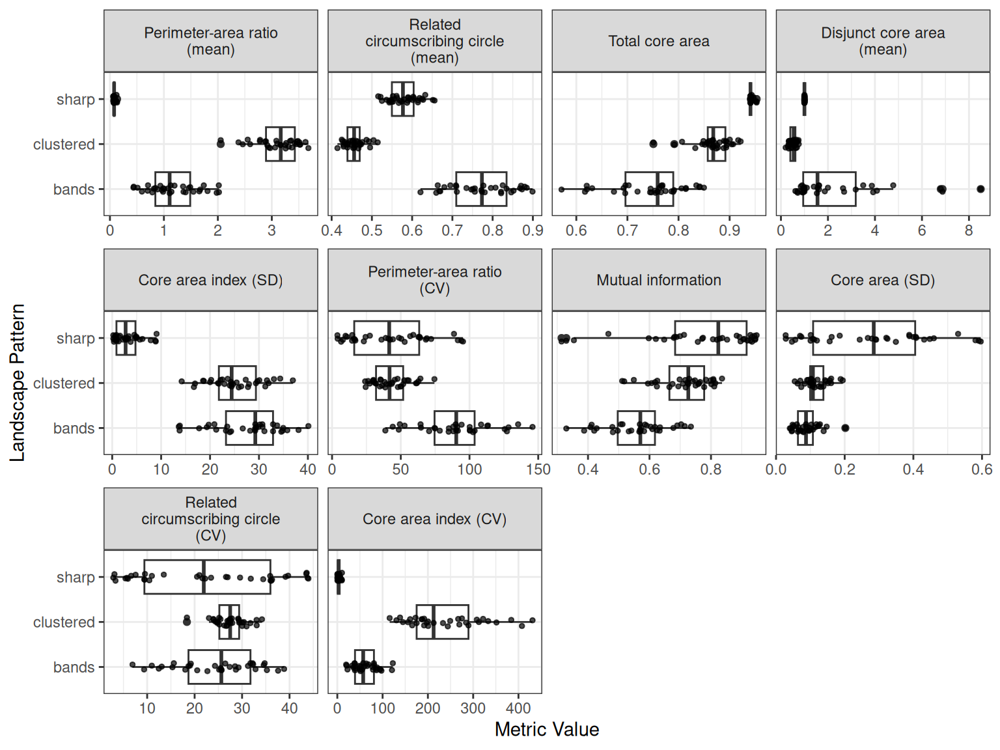
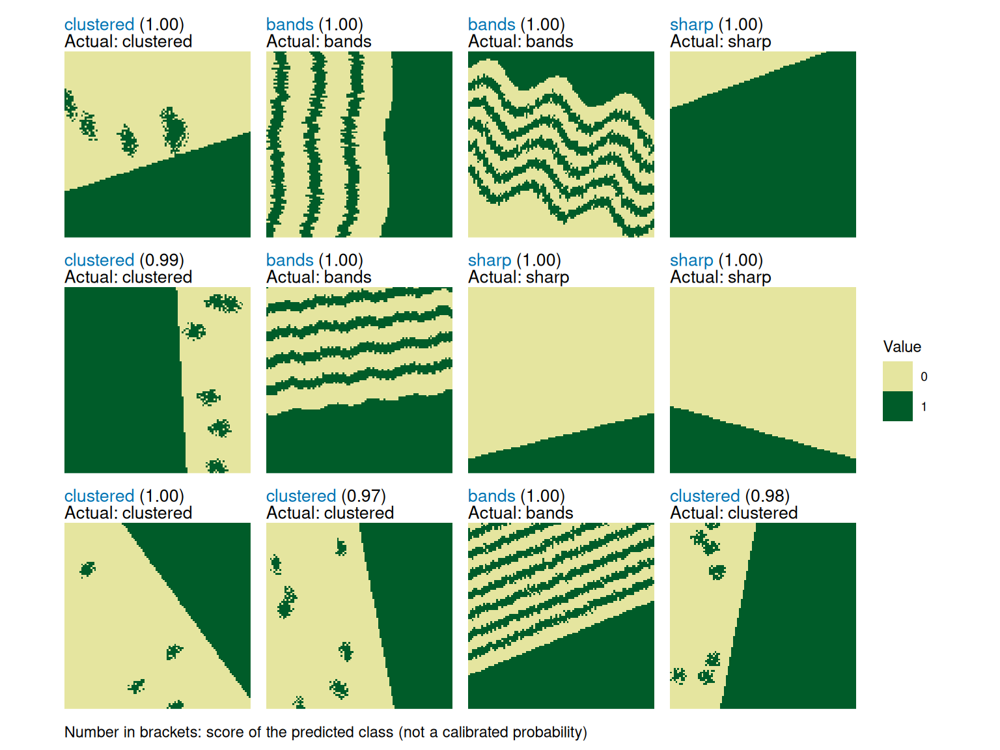

library(patternscaper)
# Set seed for reproducible example
set.seed(123456)This guide shows how to train a classifier on landscape metrics and apply it to previously unseen landscapes. The selected metrics describe landscape composition and spatial configuration, so they can also provide insight into which landscape characteristics distinguish the pattern classes. The workflow uses a feed-forward neural network from the neuralnet package.
The example extends the metric-based quick example in Get started with patternscaper by distinguishing three ecotone patterns: sharp, clustered, and bands.
Overview
The metric-based workflow has five steps:
- Prepare labelled training landscapes with known patterns
- Calculate their landscape metrics with
calculate_metrics() - Select informative metrics with
evaluate_metrics() - Train the final classifier with
train_metric_model() - Classify new landscapes with
apply_metric_model()and evaluate the predictions when their true patterns are known
Step 1: Create training landscapes
Create training landscapes with known patterns. The artificial landscape guide explains how to create training batches, and the pattern gallery shows the available patterns and their parameters. Alternatively, import your own raster or matrix data as described in Import user-defined landscapes.
# Generate 100 training landscapes from 3 ecotone patterns
training_landscapes <- create_landscapes(
n = 100,
patterns = c("sharp", "clustered", "bands")
)
#> ✔ Successfully generated all 100 training landscapesTraining landscapes should represent the pattern classes and the variation expected in the application data.
Step 2: Calculate landscape metrics
Next, calculate landscape metrics for the training landscapes. The calculate_metrics() function internally uses the functions provided by the landscapemetrics package. Metrics can be calculated at the landscape or at the class level. At the landscape level, each metric summarizes the complete landscape, while at the class level, each metric is calculated separately for every land-cover class.
Landscape-level metrics are suitable for the three ecotone classes in this example. However, if patterns differ mainly by exchanging land-cover values, such as spots and gaps or bare and dense landscapes, class-level metrics are more suitable because landscape-level metrics may not be able to distinguish them. For more details, see Calculate and evaluate landscape metrics.
# Calculate landscape metrics on the landscape level
landscape_metrics <- calculate_metrics(
training_landscapes,
level = "landscape"
)Step 3: Evaluate landscape metrics
Use evaluate_metrics() to rank metrics by how well they distinguish the training patterns and select a number of informative metrics. This example uses the default Kruskal-Wallis effect-size method to get the ten most informative metrics. The function reduces redundancy by filtering out highly correlated metrics. If too few metrics pass the correlation filter, the highest-ranked correlated candidates are added to reach the requested number of metrics. See Calculate and evaluate landscape metrics for the other ranking methods and details of the selection process.
Incomplete metrics
By default,
evaluate_metrics()excludes incomplete metrics that are not available for every landscape and zero-variation metrics that have the same value across landscapes. Incomplete metrics cannot be passed directly to the neural network because every predictor needs a value for every training landscape. Zero-variation metrics provide no information for distinguishing pattern types. Leaveexclude_incomplete_metrics = TRUEfor model training. Excluded metrics are still recorded and reported to the user but are not selected for training.
metric_selection <- evaluate_metrics(
metrics = landscape_metrics,
method = "kruskal_effsize",
metrics_number = 10,
verbose = FALSE
)
#> Warning: Excluded 6 metrics with missing values (600 rows removed).
#> ✖ NA value for at least one landscape: "enn_cv", "enn_mn", "enn_sd", "iji",
#> "pafrac", and "rpr"
#> ℹ Use `exclude_incomplete_metrics = FALSE` to retain them (not recommended for
#> model training).
#> Warning: Excluded 3 metrics with no variation across landscapes: "pr", "prd",
#> and "ta"
#> Warning: Only 9 uncorrelated metrics found. Filling to 10 with correlated metrics.
#> ℹ Added: "cai_cv"
metric_selection
#> Metrics evaluation: kruskal_effsize [66 candidate metrics]
#> -----------------------------------------
#> Selected (10): para_mn, circle_mn, tca, dcore_mn, cai_sd, para_cv, mutinf, core_sd, circle_cv, cai_cv
#>
#> Outcomes:
#> selected 9
#> selected_correlation_fill 1
#> dropped_correlated 47
#> excluded_incomplete 6
#> excluded_zero_variance 3
#>
#> Use $ranking for scores and per-metric outcomes.evaluate_metrics() returns the selected metric names in $selected together with the ranking information in $ranking, which records the score of every metric and what happened to the ones that were not selected. See the landscape metrics vignette for how to read it. The functions below accept either the object metric_selection itself or the names of the selected metrics metric_selection$selected.
Alternatively, provide a character vector of metric names to select them manually.
Use plot_metrics() to compare the selected metric distributions among the pattern classes.
plot_metrics(
metrics = landscape_metrics,
selected_metrics = metric_selection,
metric_labels = "name"
)
Step 4: Train the final model
train_metric_model() fits a feed-forward neural network using the selected metrics from step 3 as predictors. Before training, it centers and scales the metrics because their units and ranges can differ widely. The model stores these transformations so they can be applied to new landscapes in the same way.
Here, the final model is trained on all training landscapes without cross-validation. Its performance will be evaluated on independent test landscapes in step 5. Make sure to reset R’s random-number generator immediately before training so the result does not depend on random draws made by earlier steps.
See ?train_metric_model for architecture and training options.
# Reset the seed immediately before training
set.seed(123456)
# Train the final model on all training landscapes
model <- train_metric_model(
metrics = landscape_metrics,
metrics_selected = metric_selection,
cv_method = "none",
verbose = FALSE
)Save and reload the model
A metric model is an ordinary R object. Save and reload it with the base R functions saveRDS() and readRDS():
Keep the .rds file to apply the model in a future R session without retraining.
Step 5: Classify new landscapes
Use apply_metric_model() to classify landscapes that were not used for metric selection or training. These landscapes can serve two roles:
- Labelled test landscapes have known patterns and can be used to evaluate model performance
- Application landscapes have unknown patterns and can be classified with the fitted model
The function call is the same in both cases. This example uses a labelled, independent test set so that both the predictions and model performance can be inspected. Application landscapes could instead be imported data or output from simulation models (see Import user-defined landscapes).
Landscape geometry
Training and application landscapes should have comparable extent, resolution, and aspect ratio because a mismatched geometry can produce substantially different metric values.
apply_metric_model()warns when it detects a substantial mismatch. See Matching training and application data for details.
# Use a separate seed for independent test landscapes
set.seed(654321)
# Create 30 test landscapes, 10 from each training pattern
test_landscapes <- create_landscapes(
n = 30,
patterns = c("sharp", "clustered", "bands")
)
#> ✔ Successfully generated all 30 training landscapesapply_metric_model() automatically calculates the metrics required by the model and applies the centering and scaling stored during training. Because these artificial test landscapes retain their true pattern labels, the default evaluate = "auto" also evaluates the predictions. The same function call applies to unknown landscapes, but no performance evaluation is returned.
Optional performance evaluation
Performance is evaluated automatically when the input landscapes have known pattern labels. Use
evaluate = "none"to classify without evaluation, even when the landscapes are labelled. Useevaluate = "required"to raise an error when performance cannot be evaluated.
# Classify test landscapes using the trained model
classification <- apply_metric_model(
landscapes = test_landscapes,
model = model,
verbose = FALSE
)The result always contains a prediction table you can access with $predictions. This table lists the predicted pattern class, the predicted-class score, and one score for every class the model learned. If available from the input data, it also gives the actual pattern label. $performance contains the evaluation results for labelled landscapes and is NULL when the true patterns are unknown or evaluation is disabled.
# Predicted patterns
classification$predictions
#> # A tibble: 30 × 8
#> landscape_id landscape_name actual_class predicted_class score bands
#> <int> <chr> <chr> <chr> <dbl> <dbl>
#> 1 1 clustered_1_rot162 clustered clustered 1 0
#> 2 2 bands_2_rot92 bands bands 0.997 0.997
#> 3 3 bands_3_rot14 bands bands 0.998 0.998
#> 4 4 sharp_4_rot160 sharp sharp 1 0
#> 5 5 clustered_5_rot267 clustered clustered 0.990 0
#> 6 6 bands_6_rot173 bands bands 0.999 0.999
#> 7 7 sharp_7_rot166 sharp sharp 1 0
#> 8 8 sharp_8_rot196 sharp sharp 1 0
#> 9 9 clustered_9_rot54 clustered clustered 0.999 0
#> 10 10 clustered_10_rot79 clustered clustered 0.967 0
#> # ℹ 20 more rows
#> # ℹ 2 more variables: clustered <dbl>, sharp <dbl>The per-class scores are non-negative and sum to one, but they are not calibrated probabilities. The score column contains the largest per-class score for each landscape. You can compare the per-class scores within a row to assess how decisive the model was: one dominant score indicates stronger support for one class, while similar scores indicate ambiguity. A score of 0.8 does not mean that the prediction has an 80% probability of being correct.
For labelled test landscapes, use the performance results to inspect the confusion matrix, overall model accuracy, and class-specific precision, recall, and F1-score:
classification$performance$confusion_matrix
#> Actual
#> Predicted bands clustered sharp
#> bands 10 0 0
#> clustered 0 10 0
#> sharp 0 0 10
classification$performance$accuracy
#> [1] 1
classification$performance$per_class_metrics
#> # A tibble: 3 × 5
#> class count recall precision f1_score
#> <chr> <dbl> <dbl> <dbl> <dbl>
#> 1 bands 10 1 1 1
#> 2 clustered 10 1 1 1
#> 3 sharp 10 1 1 1Use plot_classified_landscapes() to show landscapes with their true and predicted patterns. Correct classifications are blue and misclassifications are bold orange. The example shows 12 of the 30 test landscapes to keep the figure readable. Set only_misclassified = TRUE to inspect only misclassifications.
Note
If you classified landscapes where the true patterns are not known, the plot will show the landscape and the predicted pattern only.
plot_classified_landscapes(
classification = classification$predictions,
landscapes = test_landscapes,
subset_index = 1:12,
ncol = 4
)
Optional: Estimate performance with cross-validation
The independent test set above evaluates the final classifier on new, labelled landscapes. Cross-validation serves a different purpose: it assesses how consistently a model classifies held-out subsets of the training data. This can help when comparing model settings.
Cross-validation can also provide an estimate of model performance when too few labelled landscapes are available for an independent test. Because the metrics were selected using the full training set before cross-validation, the held-out folds are not fully independent. The cross-validation results therefore assess model fitting with the selected metrics, not the complete metric-selection and training workflow.
The following code runs five-fold cross-validation and prints the resulting performance summaries.
# Reset the seed immediately before cross-validation
set.seed(123456)
cv_model <- train_metric_model(
metrics = landscape_metrics,
metrics_selected = metric_selection,
cv_method = "k-fold",
cv_folds = 5,
verbose = FALSE
)
cv_model$performance$confusion_matrix
#> Actual
#> Predicted bands clustered sharp
#> bands 33 0 0
#> clustered 0 33 0
#> sharp 0 0 34
cv_model$performance$accuracy
#> [1] 1
cv_model$performance$per_class_metrics
#> # A tibble: 3 × 5
#> class count recall precision f1_score
#> <chr> <dbl> <dbl> <dbl> <dbl>
#> 1 bands 33 1 1 1
#> 2 clustered 33 1 1 1
#> 3 sharp 34 1 1 1The performance summaries combine the held-out predictions from all folds. Each landscape is classified once by a model that was not trained on that landscape. The confusion matrix contains these pooled predictions, and the accuracy and per-class metrics are calculated from that matrix. After cross-validation, the returned final model is trained on all training landscapes.
For small or unbalanced training sets, train_metric_model() may reduce the number of folds or switch to leave-one-out cross-validation. You can also request leave-one-out cross-validation directly with cv_method = "loo", which trains one model per landscape and is therefore only feasible for very small datasets. See ?train_metric_model for more details.